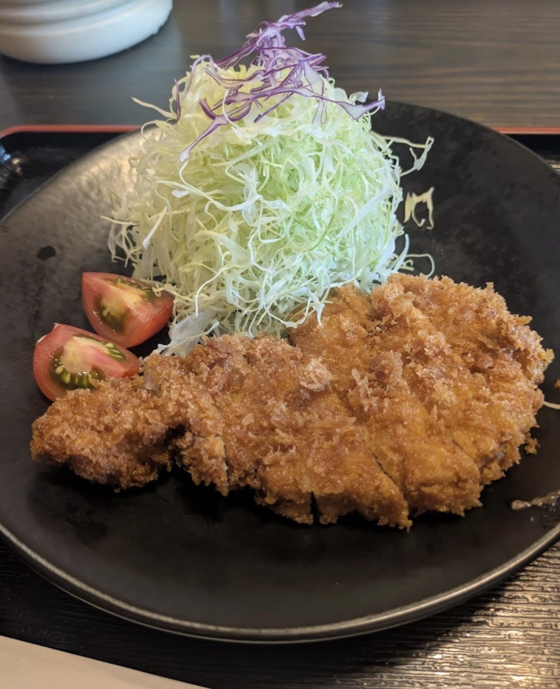
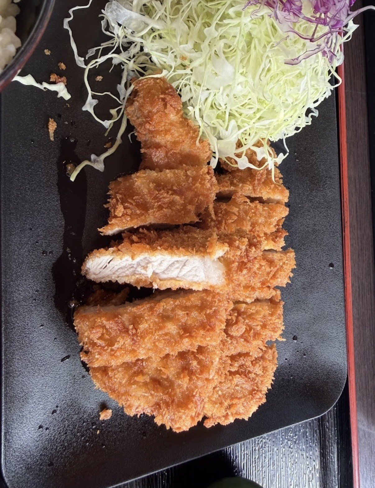
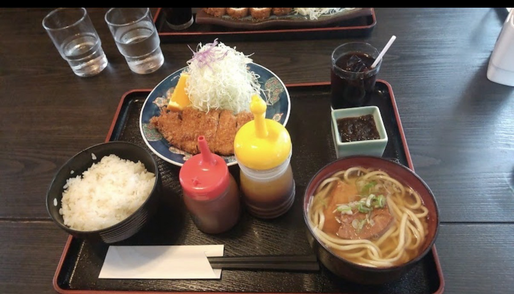
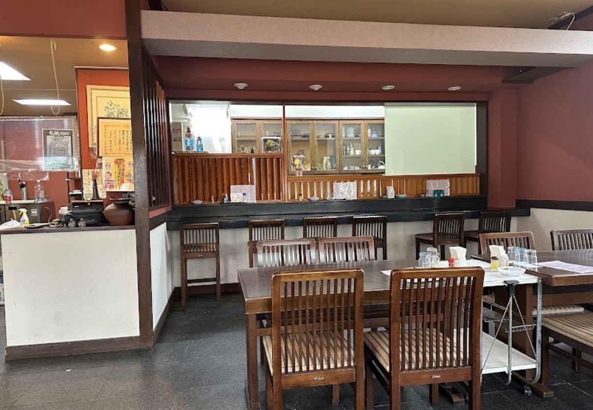
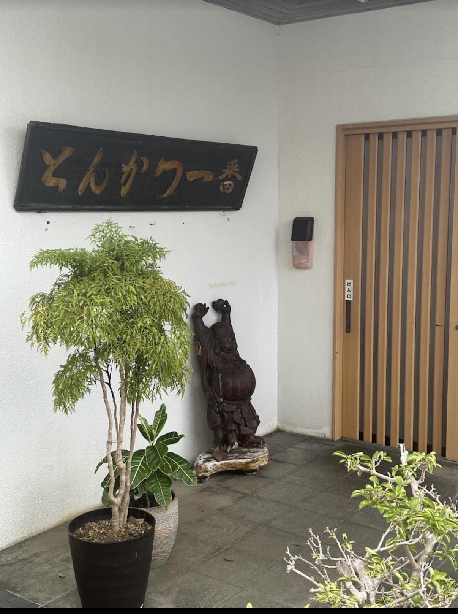
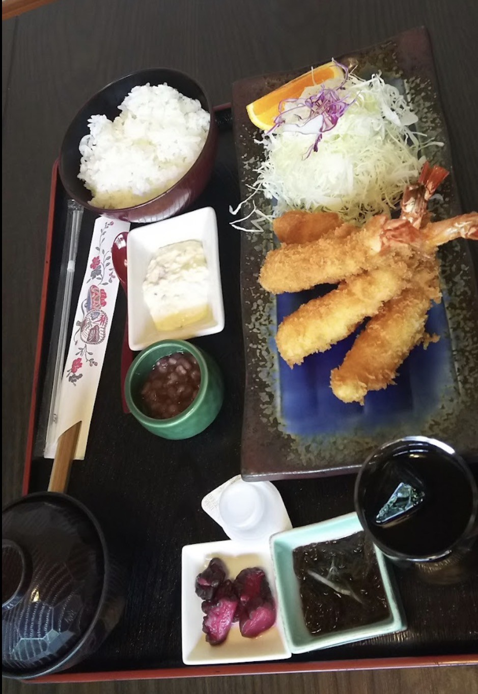
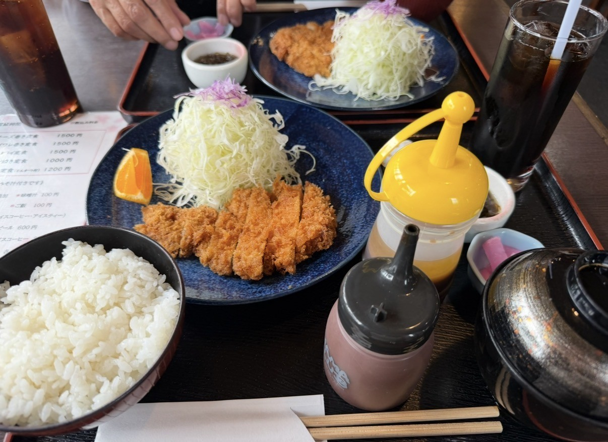

Tonkatsu Ichibanとんかつ一番
とんかつ一番
Tonkatsu Ichiban is one of Miyakojima’s long-standing local restaurants, serving its signature tonkatsu for over 50 years. Known as a pioneer of tonkatsu on the island, it continues to be run by the same family, carrying forward a tradition built on consistency, care, and trust. The flavor is unmistakably their own — original, comforting, and familiar to generations of locals. With fresh ingredients and a dedication to quality that has never changed, it remains a place that never seems to run out of customers. Ichiban is not the kind of restaurant that advertises widely. That is what makes it especially meaningful for My Miyakojima to introduce it here. A quiet, enduring presence — and a place deeply rooted in the everyday life of the island.
とんかつ一番は、宮古島で50年以上続く老舗のとんかつ店です。 島でとんかつ文化を築いてきた先駆けとして知られ、 今もなお同じご家族によって大切に営まれています。 ここにしかないオリジナルの味は、 地元の方々に長年親しまれ、世代を超えて愛され続けています。 新鮮な食材と変わらない丁寧な味づくりが、 いつ訪れても安心できる理由です。 広く広告を出すようなお店ではないからこそ、 今回My Miyakojimaでご紹介できることをありがたく感じています。 静かに、そして確かに、 宮古島の日常に根付いている一軒です。
Why We Recommend Itおすすめする理由
Recommended for its steady local trust, classic flavor, and the feeling of a restaurant that has grown with Miyakojima over time.
長年の信頼、変わらない味、そして宮古島とともに歩んできたお店の空気感を大切に紹介しています。
Photos 写真






Location 場所
Address
Nishizato-993-25 Hirara,
Miyakojima, Okinawa 906-0012
沖縄県宮古島市平良西里993-25
Phone
0980-72-0508
電話番号：0980-72-0508
📞 Call Now 電話する 📍 Googleマップで見る Open in Google Maps 🌐 Menu / Website メニューを見る宮古島の事業者さまへFor Miyakojima Businesses
お店やサービスを、英語と日本語で丁寧に紹介しませんか？
My Miyakojimaでは、宮古島の事業者さま向けに、雰囲気やストーリーまで伝わる紹介ページを制作しています。観光で訪れる方にも、島に住む方にも届くように、英語と日本語の両方で掲載できます。
My Miyakojima creates curated bilingual feature pages for selected local businesses, helping visitors understand your story before they contact you.
掲載・制作の相談をするContact My Miyakojima